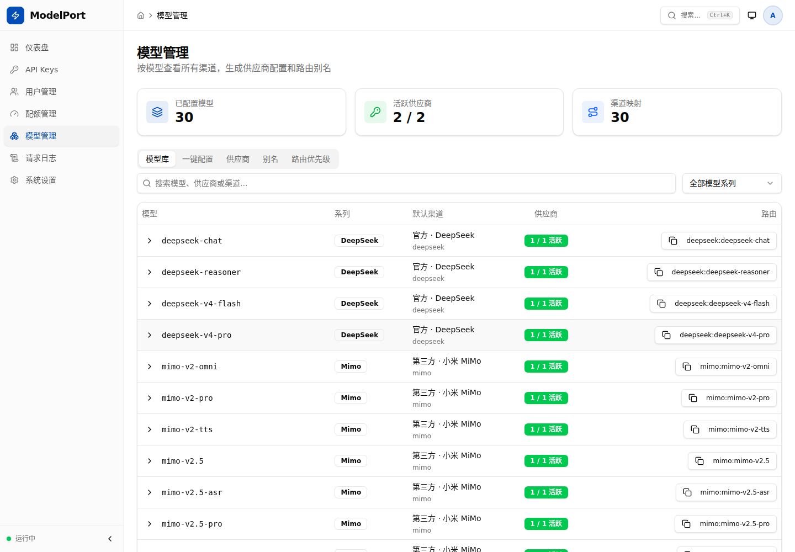
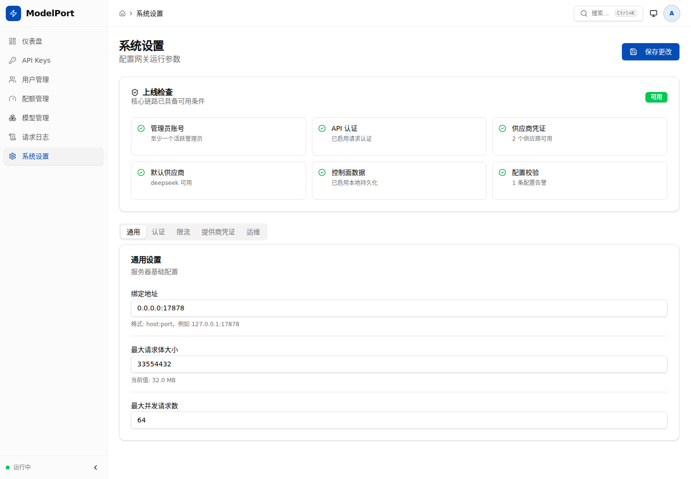

多模型能力很多，但开发者入口应该稳定
不同模型提供商有不同协议、模型命名、鉴权方式、限流策略和稳定性表现。ModelPort 让开发者继续使用熟悉的 Claude 客户端，在本地网关里统一处理 Provider Routing、协议适配、预算控制、请求日志和健康观测。
不同模型提供商有不同协议、模型命名、鉴权方式、限流策略和稳定性表现。ModelPort 让开发者继续使用熟悉的 Claude 客户端，在本地网关里统一处理 Provider Routing、协议适配、预算控制、请求日志和健康观测。
Rust 后端负责入口 API、鉴权、路由、协议转换、SSE 流式和指标记录；React Dashboard 覆盖 API Keys、用户、额度、请求日志、模型/Provider 管理、系统设置和上线检查——从底层协议到可操作的控制台全部打通。



标准 `/v1/messages` 端点，Claude Code / VS Code Claude 零改动接入。
模型别名、前缀匹配、未知模型透传、本地运行时接入和 fallback 策略。
x-api-key / Bearer 鉴权、API Keys 管理、用户/项目/团队、配额和模型 Allowlist。
请求日志、Token 用量、缓存命中、延迟、重试、成本估算和 Prometheus 指标。
API Key、用户、额度、Provider、模型库存、备份、运行参数和上线检查。
Docker Compose、PostgreSQL 持久化、配置校验、doctor、provider matrix 和验收脚本。
Claude Code / VS Code Claude 调用标准 Anthropic Messages API，开发者工作流不变。
入口处理鉴权、限流、模型命名解析、别名匹配、路由选择和 SSE 流式稳定性。
适配层完成协议转换、超时控制、健康检查、冷却期和跨 provider fallback。
请求日志、Token、延迟、成本、预算和 Prometheus 指标进入 Dashboard。
持续记录不同提供商在流式输出、工具调用、上下文长度、错误模式和成本估算上的兼容表现。
围绕 API Keys、项目、预算、模型 Allowlist 和审计事件，让小团队使用模型的入口更可控。
继续整理 Ollama、vLLM、SGLang、llama.cpp 等本地运行时的接入方式和验收标准。